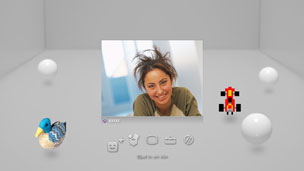

Vänner > Röst-/videochatt > Starta eller avsluta en röst-/videochatt
Starta eller avsluta en röst-/videochatt
För att använda denna funktion kanske du måste uppdatera systemprogramvaran.
Du kan röst-/videochatta med personerna på listan över vänner. För att kunna röstchatta behöver du en ljudindata- och ljudutdataenhet (t.ex. ett headset, säljs separat). För att kunna videochatta behöver du dessutom en USB-kamera (säljs separat).
Starta röst-/videochatt
1. |
Välj |
|---|---|
2. |
Välj |
3. |
Välj |
4. |
Skriv ett meddelande och välj därefter [Skicka].  Om personen går med i chatten, kommer hans eller hennes bild att visas och röst-/videochatten startar. |
 (Vänner) >
(Vänner) >  (Starta en ny chatt).
(Starta en ny chatt). (Röst-/videochatt).
(Röst-/videochatt). (bjud in en vän) från den meny som visas på skärmen.
(bjud in en vän) från den meny som visas på skärmen.Tips!
- PS3™-systemet har funktioner för röst-/videochatt. Andra chattalternativ, t.ex. att chatta medan man spelar, kan vara tillgängliga via spelprogramvaran. Mer information finns i anvisningarna som medföljer spelprogramvaran.
- Du måste vara inloggad på PSNSM för att kunna chatta.
- Även om du kan bjuda in flera vänner till chatten, kommer enbart de fem första som accepterat att visas i chattrummet.
- Upp till sex personer kan delta i ett chattrum.
- Röst-/videochattfunktionen kan inte användas om användningsbegränsningar har angetts. Mer information om inställningar av föräldrakontroll hittar du under [Om XMB™-menyn] > [Användning av funktionen för föräldrakontroll] i denna handbok.
- Du kan använda ett kompatibelt USB-headset / Bluetooth® headset / USB-kamera (EyeToy™) / PlayStation®Eye / USB-kamera som följer USB video class (UVC) för PS3™-systemet.
- Använd en hubb som stödjer USB 2.0 när du ansluter en USB-kamera via en USB-hubb. Om du använder en hubb som inte stödjer USB 2.0 kan bilden försämras eller så visas den eventuellt inte.
- För information om tillbehör som stöds och användarinstruktioner ska du kontakta den återförsäljare som säljer tillbehören.
Lämna chattrummet (avsluta röst-/videochatt)
Under en chat, välj  (Lämna) från kontrollpanelen.
(Lämna) från kontrollpanelen.
Tips!
Om den person som startade röst- /videochatten lämnar rummet, kommer chattrummet att stängas.